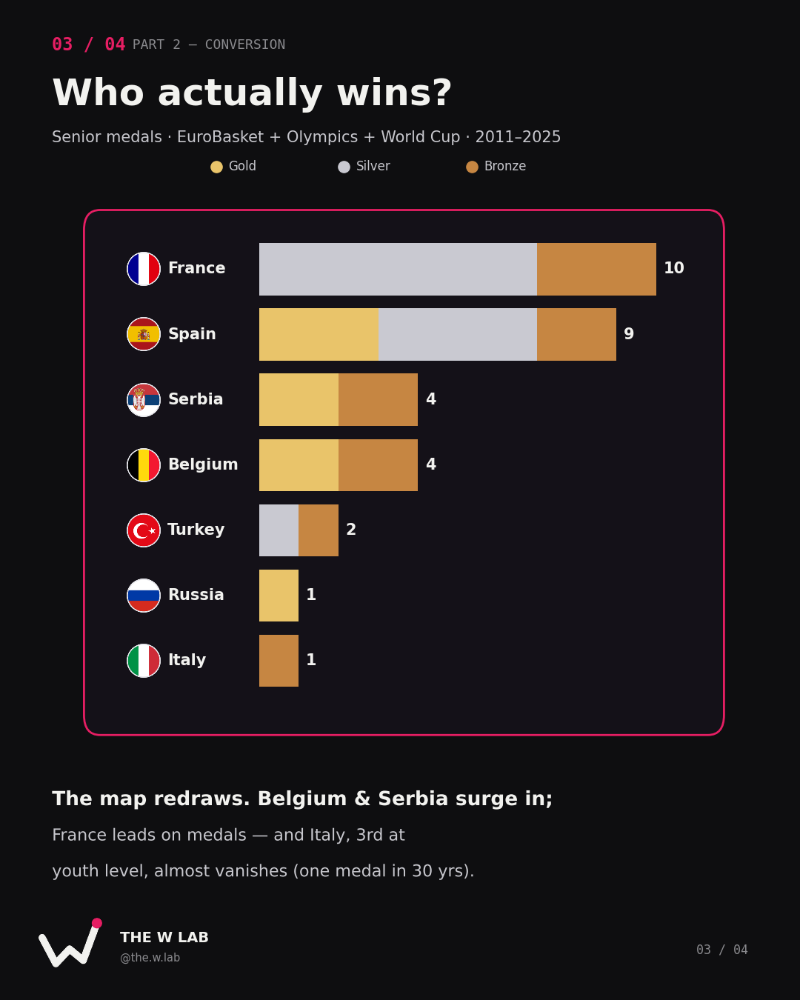

At a glance
On Saturday, the U20 Women's EuroBasket tips off in Lithuania. It is, we're told, where Europe's next generation is forged — the proving ground that feeds the senior national teams. Spain has won it ten times. France and Russia are rarely far behind. The story writes itself: dominate here, and you'll dominate later.
We wanted to know if the story is actually true.
So we pulled every U20 Women's EuroBasket medal since the tournament began in 2000 — 22 editions — and cross-referenced it against senior success over the last fifteen years. The result doesn't kill the pipeline idea. But it complicates it in three specific, quantifiable ways.
The question is simple: does winning at U20 predict senior success?
Part 1 — Who produces the talent
First, the youth ledger. Here is every nation that has ever medalled at the U20 Women's EuroBasket:
Spain is not merely good here. Spain is the engine room: ten titles in twenty-two editions — 45% of every U20 EuroBasket ever held — and fifteen medals in total. France (12 medals) and Russia (11) form the chasing pack, and then there is a cliff. Italy sits fourth on seven; everyone else has four or fewer.
The concentration is the finding. At youth level, this is a three-nation sport with a long, thin tail. Three federations have turned U20 basketball into something close to a closed shop.
One asterisk worth planting early: every one of Russia's medals predates its 2022 FIBA suspension. On paper it's a youth superpower. In practice, it no longer exists on this map — a point we'll return to.
Part 2 — Does it convert?
Production is half the story. The other half is whether it turns into anything.
To measure that, we needed a definition of senior success. We used the one that's hardest to argue with: medals — gold, silver, or bronze — at the three competitions that matter most: the senior EuroBasket, the Olympic Games, and the FIBA Women's World Cup, across 2011–2025.

Now the map redraws itself.
France leads on senior medals — with zero golds. Ten podiums, five of them silver, and not a single title to show for it. Five consecutive EuroBasket finals lost between 2013 and 2021 is a story in itself: a country that produces relentlessly, reaches the last step relentlessly, and cannot take it.
Spain converts. Three senior titles, nine medals — the only nation whose youth and senior numbers are both enormous. This is what a functioning pipeline looks like.
But look who walks into the senior table uninvited. Belgium and Serbia — four medals each, multiple golds between them — despite modest or nonexistent youth pedigrees. And look who nearly vanishes. Italy, third all-time at U20, has exactly one senior medal in fifteen years: a 2025 bronze that was its first senior podium in three decades.
The verdict
Put both numbers on a single chart — youth medals on one axis, senior medals on the other — and the countries sort themselves into three clean groups.

The pipeline that works — Spain. High youth production, high senior return. The clean case, and the one everyone points to. The same system that funnels players to the WNBA and EuroLeague genuinely converts youth trophies into senior ones.
Produced, not promised — Italy and Russia. Italy manufactures youth medals that evaporate before the senior stage. Russia was a youth and senior power until 2022, when suspension erased the pipeline overnight — a reminder that the decisive variable can be geopolitics, not development.
Won without the pedigree — Serbia and Belgium. This is where the thesis breaks. Belgium are back-to-back European champions (2023, 2025) with zero U20 medals in the tournament's entire history. A golden generation and shrewd team-building beat two decades of youth silverware.
And France sits alone in its own quadrant: the perpetual bridesmaid. Production without a breakthrough.
So — does U20 dominance predict senior success? The honest answer is that it is neither necessary nor sufficient. Spain shows it can work. Italy shows production alone isn't enough. Belgium shows you don't need it at all.
What this doesn't tell us
The numbers are seductive, and the sample is small, so a few caveats before anyone over-reads the dots:
- Medals aren't development. A federation can produce elite individual players — WNBA and EuroLeague starters — without its national team ever reaching a podium. Team medals and talent production are related, not identical. Bosnia's Jonquel Jones, a former MVP, appears nowhere in this data.
- The windows don't line up perfectly. A 2004 U20 champion's players peaked around 2010–2016; a 2024 champion hasn't reached senior prime yet. We chose overlapping windows, but "conversion" is a moving target.
- Small n. Twenty-two editions and roughly fifteen medal-winning nations. A single golden generation (Belgium) or one geopolitical event (Russia) swings the whole picture.
- "Success = medals" is a choice. We could have used FIBA world rankings, World Cup qualification, or the number of players in top leagues. Each definition tells a slightly different story. Ours privileges the podium — deliberately, because the podium is unambiguous.
- Correlation, not causation. Coaching, federation funding, naturalisation, roster continuity, and league infrastructure all sit underneath these points. The chart describes; it doesn't explain.
Methodology
For anyone who wants to check the work:
- U20 data: all-time medallists of the FIBA U20 Women's EuroBasket, 2000–2025 (22 editions; no 2020 or 2021, cancelled for COVID), from FIBA. We logged gold/silver/bronze per edition and counted medals per country with a
value_counts()across the three podium columns in pandas, then filled missing combinations with zero and summed to a total. - Senior data: podium finishes at EuroBasket Women (2011–2025), Olympic women's basketball (2012–2024), and the FIBA Women's World Cup (2010–2022), from FIBA and FIBA Europe. "Senior success" is the sum of medals across those three competitions.
- The chart: U20 total medals (x) plotted against senior total medals (y). Belgium — absent from the U20 table because it has never medalled there — was added manually at (0, 4). Its absence from the youth ledger is itself a data point.
- No model. Everything was built in Python (pandas, matplotlib). There is no regression and no trend line here, on purpose: with a sample this small, a fitted line would imply far more certainty than the data can carry. This piece is descriptive by design.
What to watch on Saturday
When the tournament tips off in Lithuania, Spain will chase an eleventh title — and it's worth remembering that, historically, that trophy has been the most reliable predictor of very little. The players worth tracking aren't necessarily on the team that lifts it.
The pipeline is real for some, a mirage for others, and completely irrelevant for the champions who skipped it entirely.
Produced, not promised.